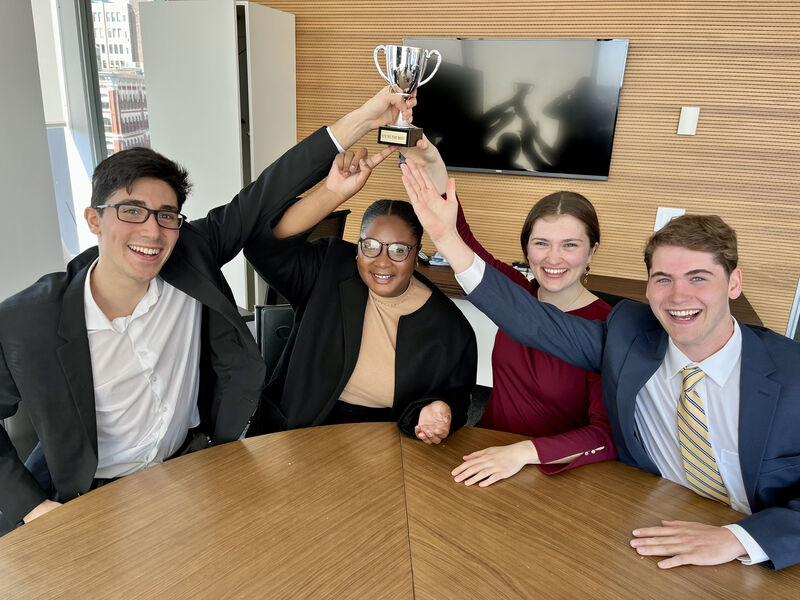
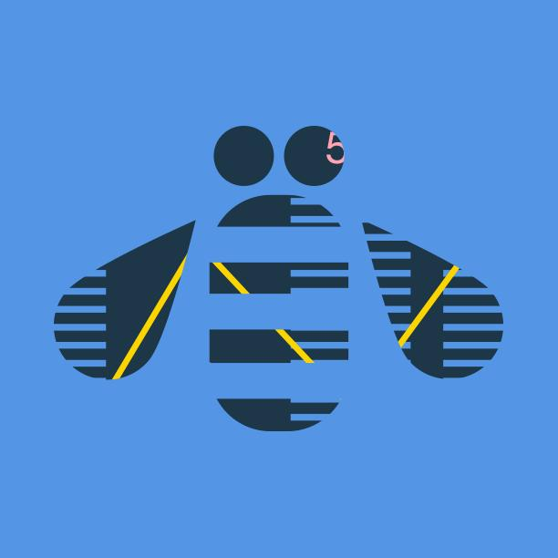
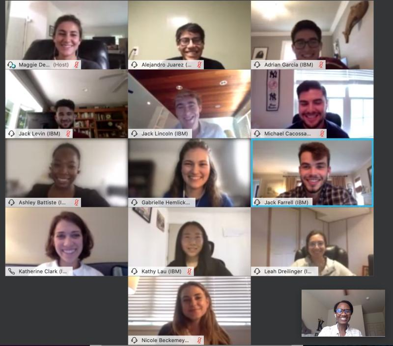

Media
Photos, panels, and places I've shown up on the web.
Photos
Moments from Penn, IBM, and the road in between.

Completed IBM Summit Program and Global Sales School, 2022
LinkedIn post →
Starting the technical sales training program after graduation, 2020
LinkedIn post →
Virtual internship cohort, summer 2020
LinkedIn post →Appearances & mentions
Panels, research, and profiles from around the web.
Lancaster Catholic — All-State Orchestra
First in school history to qualify for PMEA All-State (2017)
Fifth Wall Performing Arts
Violinist profile — Brooklyn Symphony, Handel's Messiah, Summertrios board
Penn Symphony Orchestra
All-student orchestra — VP & Principal 2nd Violin
Summertrios Chamber Music Workshop
Violin intern and board member
Moab Music Festival
Award-winning chamber music festival in Utah
Penn Careers in Technology panel
Alumni panelist, College of Arts & Sciences — liberal arts paths into
tech roles
UPenn CIS 120 staff page
Head TA profile for Programming Languages and Techniques I
Urbanowicz Lab, Penn Medicine
Undergraduate ML research on dynamic patient risk prediction (TARPS)
Code.org — Hour of Code 2021
Built validation for the "Hello World" activity used by millions of students
Grace Hopper Celebration Research Scholar
Selected by CRA-W for research-focused programming at GHC 2019, Orlando
LinkedIn
Career updates, IBM certifications, and professional writing
GitHub
Code.org fork, music_maker, and other open source work
IBM certifications (Credly)
Global Sales School, Terraform, watsonx, and technical sales credentials